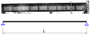
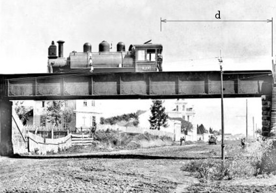
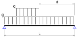

Vigas
Idealização
O objeto estrutural da imagem a seguir é o seu objetivo:
Em 1944, a Ponte Preta foi inaugurada pelo governador e coronel, Durival de Brito. A obra foi um avanço para a época e considerada um projeto de risco. Toda a sua estrutura metálica foi importada da United States Steel Co., Nova Iorque (naquela época não havia produção de aço no Brasil), e as pedras foram talhadas em formas geométricas. Os americanos exigiram um documento que garantisse a estabilidade da obra, pois nunca construíram algo semelhante e estavam temerosos. O engenheiro e projetista Oscar Machado da Costa arcou com todos os riscos e junto com sua equipe colocou a ponte em pé.
A ponte tinha um comprimento total de 16 m, uma viga metálica tipo I soldada de 145 cm de altura, 50 cm de largura nas mesas e 3 cm de espessura nas mesas e alma (medidas muito aproximadas), com enrijecedores de alma para o cisalhamento espaçados de 1,7 m aproximadamente. Os apoios nas extremidades são compostos por cunhas metálicas piramidais com uma rótula ligando ao perfil do lado esquerdo (referência a foto) e cunhas metálicas piramidais com roletes na base e rótulas ligando ao perfil do lado direito (referência foto).
O primeiro passo é a idealização estrutural, ou seja, transformar uma estrutura física real em um modelo idealizado representativo dos efeitos que ocorrem, ou irão ocorrer, na estrutura real. Como se trata de uma treliça, podemos idealizar da seguinte forma:

Então, basta aplicar as cargas permanentes de peso próprio, do pavimento, as acidentais de uso. Como exemplo, vamos imaginar que temos 52,8 kN/m de carga permanente, $g$ (peso próprio + distribuição de cargas fixas do pavimento) e 211 kN/m como peso idealizado de uma locomotiva antiga de 7 m de comprimento, $q$, parada à uma distância $d$ de 7 m da borda esquerda da ponte (referência foto). Portanto, nossa idealização com as cargas ficaria:


Bem, precisamos agora resolver esse modelo simples, calculando os esforços e os deslocamentos. No entanto, agora temos um modelo estrutural diferente da barra de treliça. Temos um elemento estrutural com uma carga transversal e não mais axial.
Que tipos de efeitos esse carregamento provoca nesse elemento? Como o meu deslocamento varia no comprimento da viga? E a deformação? E a tensão?!
Vamos começar pela teoria!